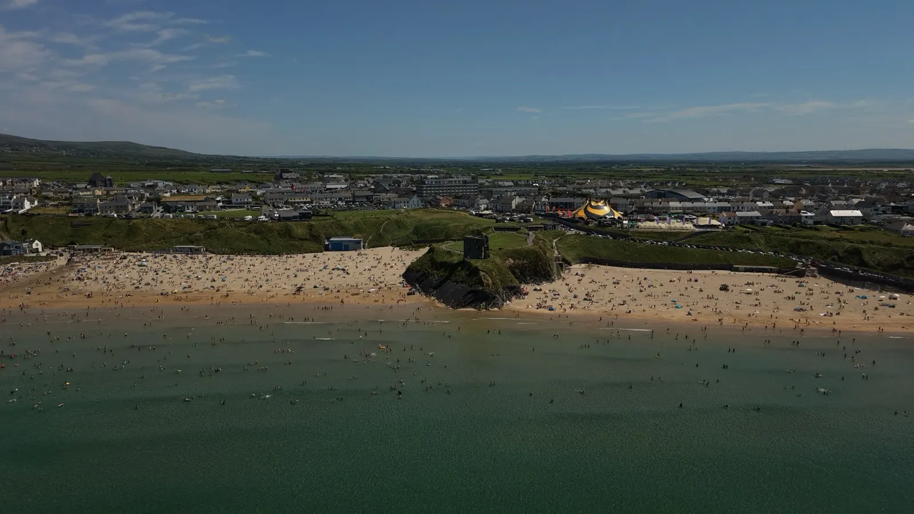
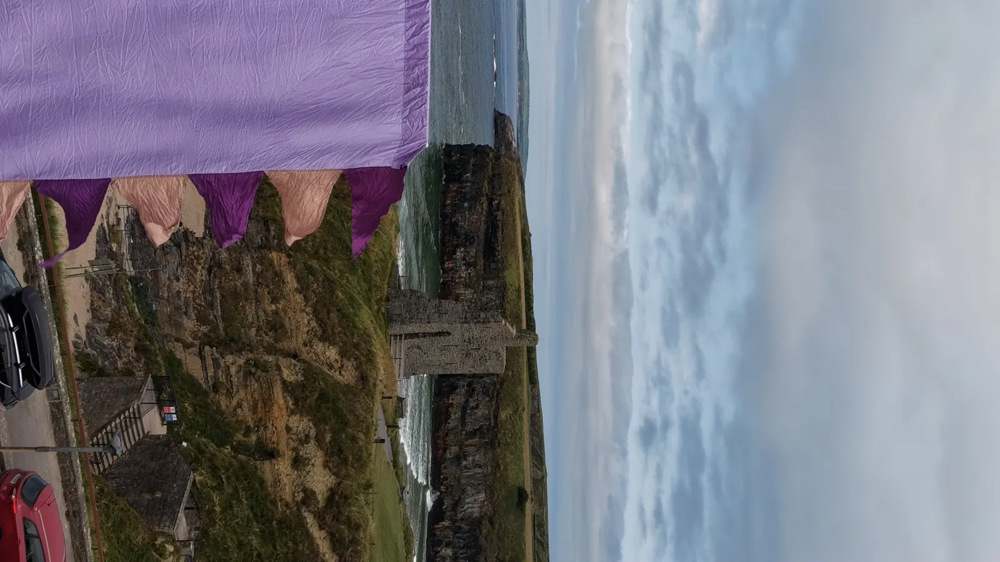

Ballybunion Beaches
The Ladies’ and Men’s beaches sit either side of the castle headland, with broad sand and Atlantic views.

Ballybunion · County Kerry · Wild Atlantic Way
Golden beaches, Atlantic cliff walks, famous links golf and a lively seaside town—all close to the Horizon Festival site.
See & do
The Ladies’ and Men’s beaches sit either side of the castle headland, with broad sand and Atlantic views.
The surviving tower of the coastal castle stands above the beach and remains the town’s signature view.
A headland route above sea arches, stacks and Nuns’ Beach. Stay on marked paths and observe local safety signs.
Internationally known links courses shaped by dunes beside the Atlantic, a short journey from the town centre.
A long-standing Ballybunion tradition using heated seawater and Atlantic seaweed along the cliff road.
A privately operated cliff walk south of town with coastal geology, sea birds and wide ocean views.

Where to stay
An example of the future accommodation directory. Names, descriptions, distances and price bands will be verified before the listings become official.
Clifftop rooms looking towards the Atlantic, close to the beaches and town centre.
Example: 6 min walkAn example hotel card with room for a short description and verified booking information.
Example: by the golf clubAn example guesthouse listing showing how property details will appear in the finished directory.
Example: next to the Old CourseAn example town-centre card ready for confirmed copy, contact details and booking links.
Example: town centreAn example self-catering listing for groups looking for a base near the festival.
Example: beachfrontAn example cottage listing showing the planned card layout for properties outside the centre.
Example: 12 min drivePreview only: these cards are not booking recommendations and their details may be incomplete. For current availability and verified information, use the official where-to-stay guide ↗.